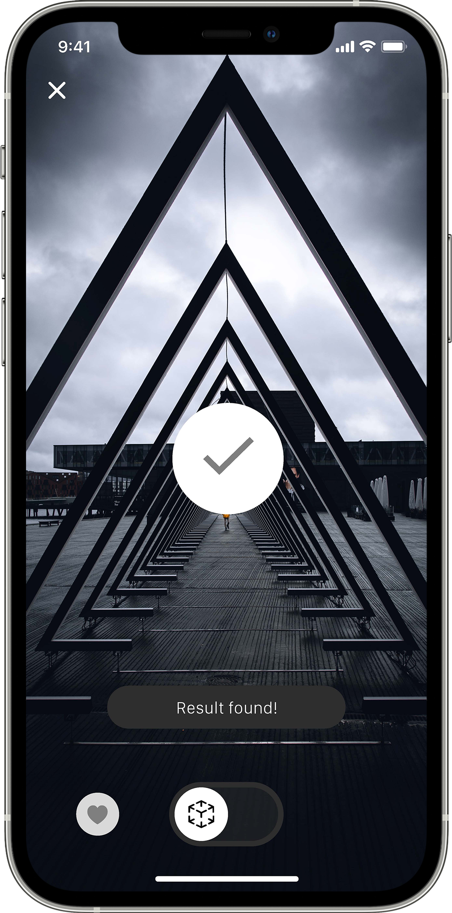
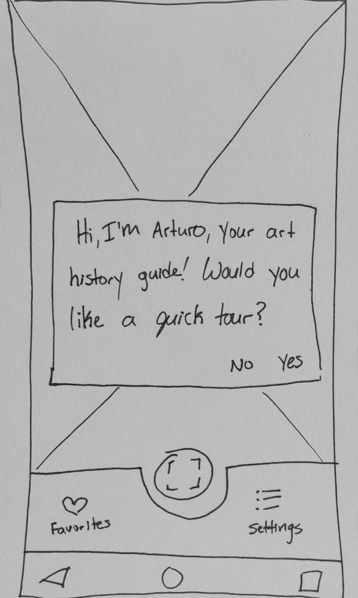
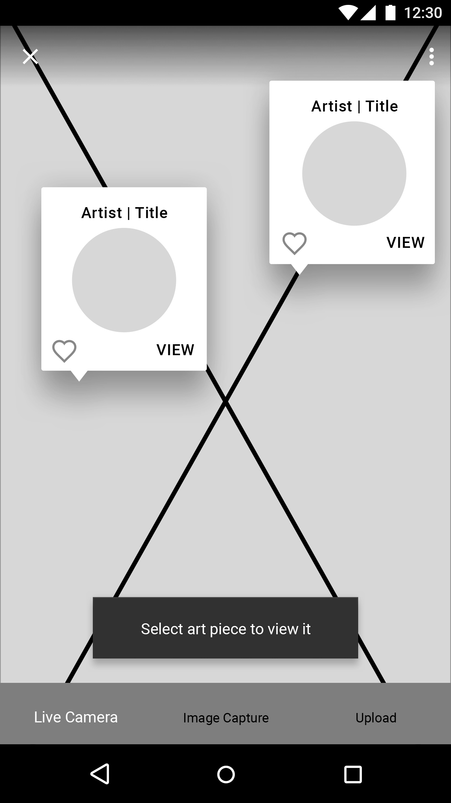

“The art world is the biggest joke going. It’s a rest home for the overprivileged, the pretentious, and the weak.”
—Banksy
App Context
Arturo is a native AR art scanning app created during my UI Design course at CareerFoundry. The assignment was to create two versions of my chosen app—one native iOS and one native Android.
Understand
Objective
To remove barriers of wealth, privilege, and education by providing any smartphone user with AR access to in-depth and meaningful information.
Challenge
Art can be challenging to care about without a key to understanding its story. It can cost a lot of money to access this information, as the art world is gate-kept by the highly wealthy and educated.
Truth
Art culturally and historically carries the significance and truths of its people. However, the highbrow, academic nature of fine art keeps it from the very people it was meant to reach.
Action
Arturo introduces an augmented reality overlay to the user’s surroundings, offering basic information in real-time. The user can save scans, upload images from their phone, and explore symbolism and context.

“I always want to design a frame that’s open to everyone. I don’t see art as a secret code.”
—Ai Weiwei
Ideate
User Story
The user is new to the app and has just signed up, but they don’t know how to work the app completely.
User Flow
Focus: Onboarding
Low-Fidelity Wireframes
The ongoing challenge I faced was preventing scope creep and maintaining lean UX. When I began talking myself into, “maybe this should be part of Phase One,” I asked user-related questions to direct my decisions and refocus on my
MVP.

Mid-Fidelity Wireframes
Finding balance was my focus. I wanted enough information and steps to make the user feel confident in using the app, without being overwhelming.
Android

iOS
“What art is, in reality, is this missing link, not the links which exist. It’s not what you see that is art; art is the gap.”
—Marcel Duchamp
Branding
I wanted the logo to have character but still be straightforward. The colors needed to provide an unobtrusive canvas on which art could thrive.
Location-based settings will be implemented. Users will be able to reference their map and determine what is located nearby, and even plan an Arturo-guided tour out and about, as well as in galleries and museums. Optional
location-based alerts will also be sent when users are near an art piece.
Phase Three
Users will have access to interactive 3D views of sculptures and architecture that can be accessed through viewing a user’s “favorites” and by uploading or scanning images of 3D pieces.
Phase Four
Monetization of the app will include the licensing of APIs to museums, art museums, and galleries.
All Screens
Continue scrolling to see Android and iOS versions side-by-side.